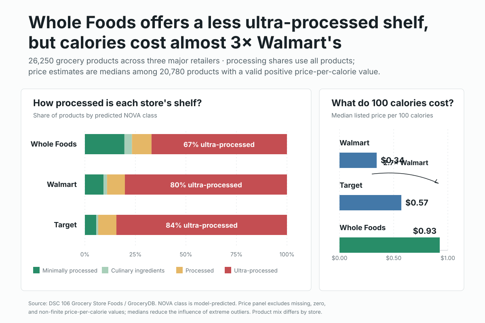

DSC 106 · Project 1 · Expository Visualization
Processing and price across grocery-store shelves
A static visualization investigating how the degree of food processing and price per calorie differ across Whole Foods, Walmart, and Target.

Design rationale
The visualization argues that Whole Foods presents a meaningful but costly tradeoff: its assortment contains a smaller share of ultra-processed products, while the median cost of 100 calories is substantially higher. This framing matters because processing and affordability both shape what shoppers can realistically choose. The takeaway is stated directly in the title so the graphic can stand on its own without the write-up.
The left panel uses 100% stacked horizontal bars because the central comparison is the composition of each store's assortment. A common zero-to-100% scale supports precise comparison, while the red ultra-processed segment receives the strongest visual weight. Green represents minimally processed foods, and the two less central NOVA classes use quieter intermediary colors. Direct percentage labels reduce dependence on the legend and draw attention to the 67%, 80%, and 84% contrast.
The right panel uses aligned bars for median price per 100 calories, which makes the price difference readable through position and length rather than area. I multiplied the provided price-per-calorie measure by 100 for a more interpretable unit. Because this variable is strongly right-skewed and contains extreme values, I used medians and excluded missing, zero, and non-finite observations. The 2.7× annotation communicates the Whole Foods-to-Walmart ratio without requiring mental arithmetic.
The design intentionally summarizes products at the store level, which makes the main tradeoff clear but obscures differences in category mix, package size, brand, and the number of options stocked. It also describes assortment rather than purchasing behavior: every listed product receives equal weight. During development, I compared store-level NOVA shares, FPro distributions, category counts, and price metrics before selecting this paired view because it produced the clearest and most consequential story.
Data and transformations
- Products analyzed
- 26,250
- Processing measure
- Predicted NOVA class for all products
- Price measure
- Median listed price per 100 calories
- Valid price records
- 20,780 after excluding missing, zero, and non-finite values
Data source: DSC 106 Grocery Store Foods dataset .